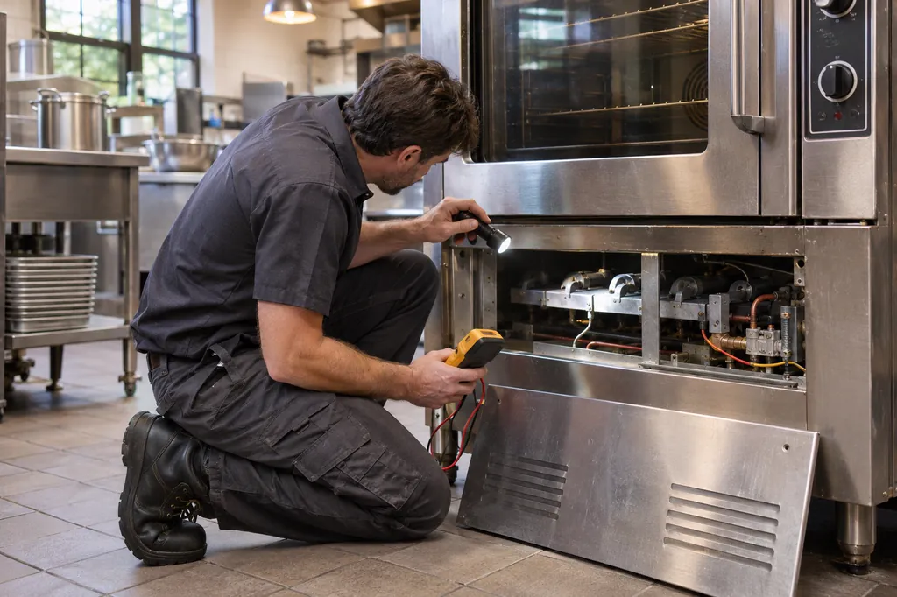

Ovens and ranges
Convection ovens, deck ovens, and commercial ranges, gas or electric.

Common problems to describe
- Won’t heat, or burners won’t light
- Doesn’t hold temperature, or cooks unevenly
- Pilot won’t stay lit
- Convection fan not running or noisy
- Door won’t close or seal properly
- Control, thermostat, or display errors